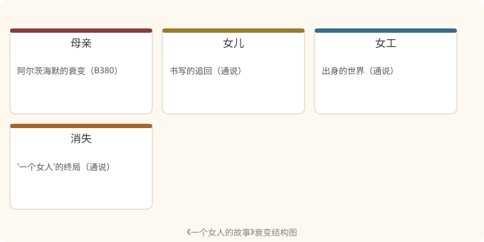

一个女人的故事
一、基本信息
| 作者 | 安妮·埃尔诺 |
|---|---|
| 成书/出版 | 1987年（Britannica B380：Une Femme (1987; A Woman's Story)） Annie Ernaux — Encyclopaedia Britannica（百科全书） |
| 国别/地区 | 法国 |
| 时代 | 近代 · 20世纪80年代 |
| 体裁 | 自传性叙事 |
| 语言 | 法语 |

《一个女人的故事》衰变结构图（主题·结构图）
二、创作背景
Britannica（B380）：Une Femme——'her mother's decline from Alzheimer's'（母亲的阿尔茨海默症衰变）。
Britannica（B380）：埃尔诺——'lightly fictionalized memoirs...spare, detached prose'。
题材（通说待核）：母亲从卡昂工厂女工到老年病院——'一个女人'的生与失。
三、内容脉络
（通说待核）母亲的'生'：女工、店主、'女权'的自发。
（通说待核）阿尔茨海默的'消失'与书写的追回。
四、主要人物表
| 人物 | 身份 | 说明 |
|---|---|---|
| 母亲 | 女工/店主 | （B380：her mother's decline from Alzheimer's） |
| 女儿（'我'） | 叙述者 | （B380 语境） |
五、主题与艺术特点
- 母亲的'衰变'（B380：decline from Alzheimer's）。
- 母女之间的'位置'互换（通说待核）。
- '一个女人'的普遍化（书名语境——通说待核）。
六、影响与评论
- Britannica：Une Femme (1987)（B380）。
Annie Ernaux — Encyclopaedia Britannica（百科全书） - Britannica：'themes include...her mother's Alzheimer's decline'（B380）。
Annie Ernaux — Encyclopaedia Britannica（百科全书）
七、阅读建议
难点
- 阿尔茨海默的叙事伦理。
- '平句'的延续。
- 《一个女人的故事》中译本（人民文学/上海人民出版社等——通说待核）。
- 法文原版。
与《一个男人的位置》成对读。
八、待核实
- 母亲名（布兰希说）核对（通说）。
- 1987年出版细节待核。
- '卡昂'养老院细节待核。